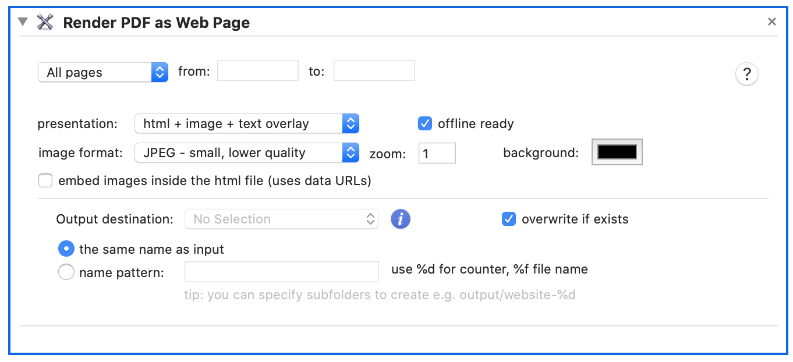

Transform PDF into a web page using images and HTML tags. There resulting page will be viewable in any modern web browser, without need to install PDF reader plugin.

VipRiser PDF Ops supports different methods for transforming PDF to the web.
html + image + text overlay
The resulting page will contain two layers, images and text. This method should be used for text documents or documents that should remain searchable. You can choose to embed images inside the html file By doing so, image will become part of the html markup itself and might be easier to work with in case you want to integrate the file in CMS system. Offline ready setting will make it possible to view html page even without network access. This is very useful for mobile devices.
html + image overlay
The each PDF page will be rendered as image and then inserted into a web page. This method works the best for PDFs that contains a lot of graphics or complex layouts.
embedded PDF viewer
The resulting web page will contain its own PDF viewer along with original PDF document. The PDF viewer is javascript-based, which means it doesn’t need to be installed separately. NOTE: you will need to host the web page online in order to view the PDF document properly due to security restrictions (javascript-based PDF viewer will not be able to load the PDF document from local file systems).